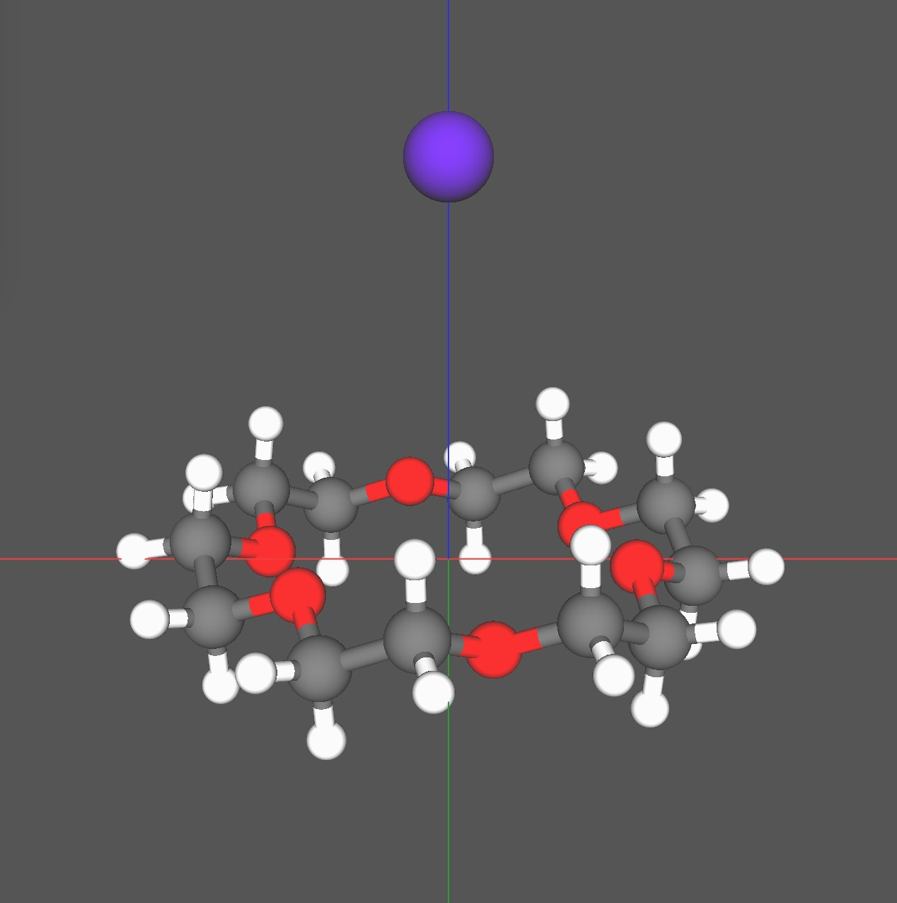
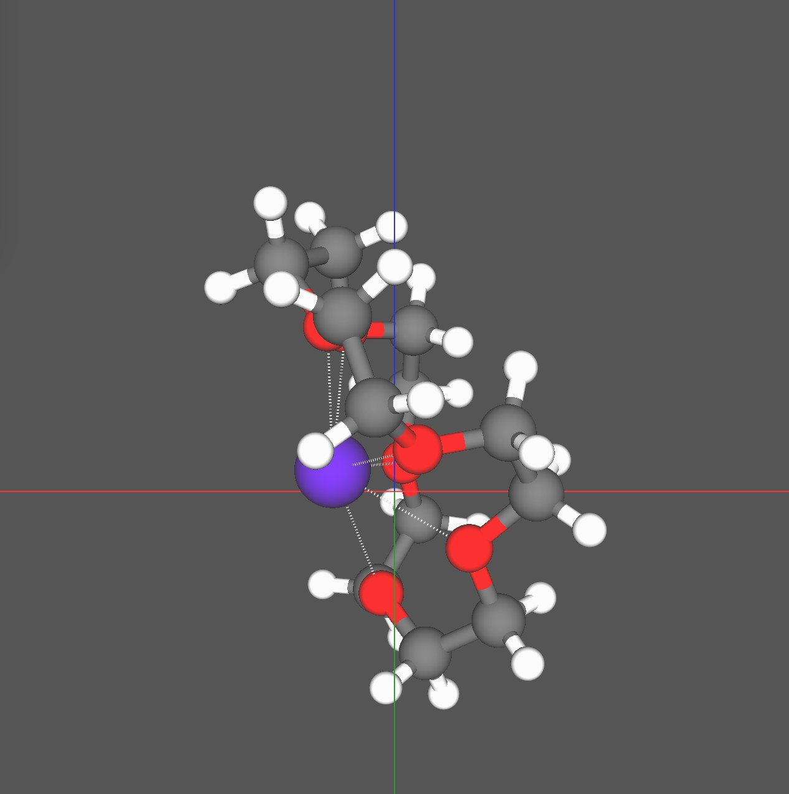
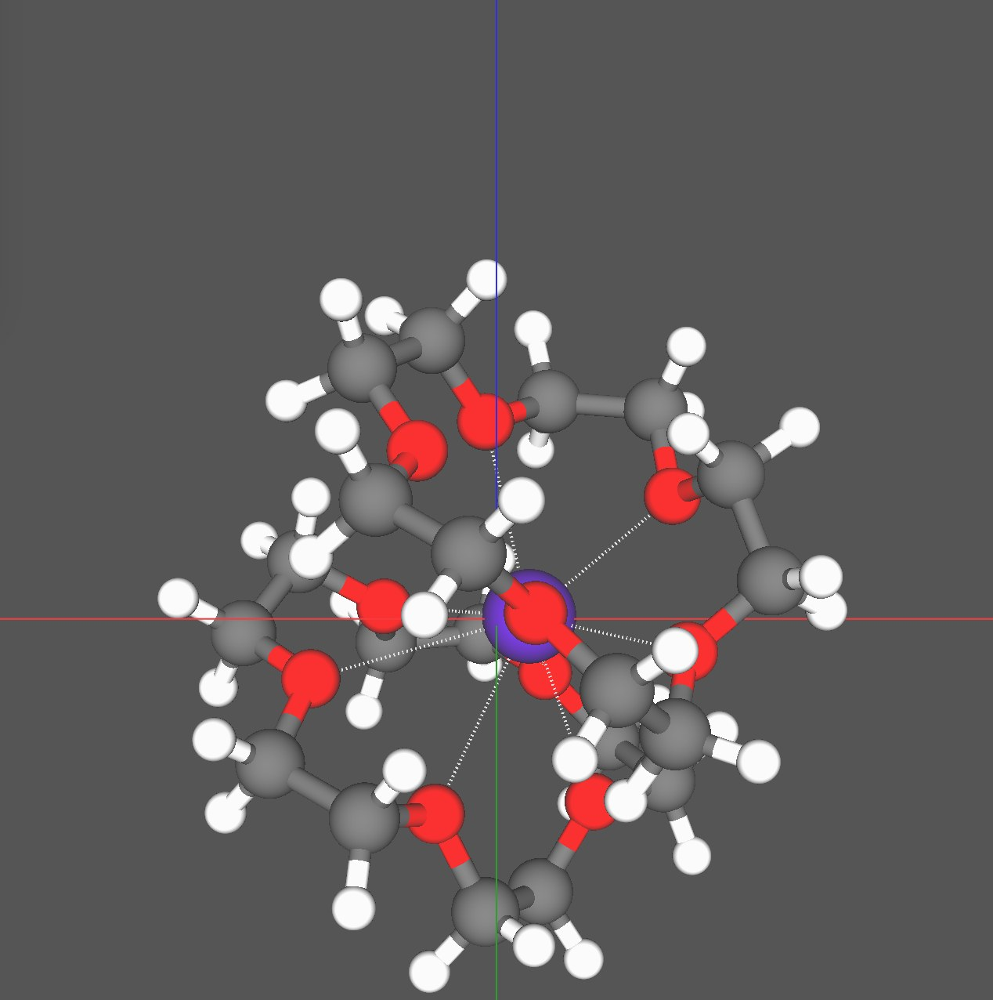

Supramolecular Chemistry: How a Crown Ether Binds an Ion
AIMS places a potassium ion above a ring of carbon and oxygen atoms, and an AI agent measures how the ring binds the ion.
An enzyme binds its substrate, an antibody binds a virus, and a ring-shaped molecule called a crown ether binds a potassium ion. In each pair the two partners stay whole, and the forces that hold the pair together are weaker than a covalent bond. The study of such pairs is supramolecular chemistry. AIMS models every atom of a crown ether and of the ion it binds, and an AI agent sets up the experiments. A student asks a plain-language question, and the agent places the molecules, runs them, measures the distances between the ion and the ring, and posts the measured data in the chat. In the window below, a ring called 18-crown-6 lies flat at 300 K with a potassium ion 6 Å above its center. Press Play and watch the ion move into the ring.
An 18-crown-6 ring and a potassium ion (purple) at 300 K. The ion reaches the center of the ring within about 2 ps of Play, and the lab draws a dotted line from the ion to each oxygen atom that holds it.
What Is Supramolecular Chemistry?
Jean-Marie Lehn described supramolecular chemistry as “chemistry beyond the molecule”: the chemistry of structures made of two or more molecules or ions held together by the forces between them. The larger partner, which surrounds the other, is called the host, and the smaller partner is called the guest. The forces between a host and a guest are the attraction of opposite charges, hydrogen bonds, and van der Waals forces. A host binds one guest more strongly than another when the size and shape of the guest match the host.
The field began with crown ethers. In 1967 Charles Pedersen of DuPont reported a family of rings built from the unit –CH2–CH2–O– that bind the ions of the alkali metals. The name of each ring gives the number of atoms in the ring and the number of oxygen atoms among them: 18-crown-6 is a ring of twelve carbon atoms and six oxygen atoms. Pedersen named the rings crown ethers because a ring sits on an ion as a crown sits on a head. Pedersen, Donald Cram, and Lehn shared the 1987 Nobel Prize in Chemistry for this work. The companion article on self-assembly shows a related subject: many molecules that arrange themselves into a micelle or a membrane.
The Forces in the Model
The lab gives every atom of a molecule a partial charge with the method of Gasteiger and Marsili, which moves charge along each bond toward the more electronegative atom. In 18-crown-6 each oxygen atom receives −0.38 e, each carbon atom +0.07 e, and each hydrogen atom +0.06 e, and the charges of the 42 atoms add up to zero. The potassium ion carries +1 e.
Two forces act between the ion and each atom of the ring, and they are the two forces that act between any two molecules in this lab. The first is the electrostatic force of Coulomb's law: the ion is attracted to the negative oxygen atoms and repelled by the positive carbon and hydrogen atoms. The second is the Lennard-Jones force, with the atom sizes of the Universal Force Field, which pushes two atoms apart when they overlap. The six oxygen atoms of 18-crown-6 lie 2.8 Å from the center of the ring, and the carbon and hydrogen atoms lie farther out. An ion at the center is therefore closer to the six negative charges than to the positive charges, and the sum of the forces on the ion points toward the center of the ring. The lab holds the ring and the ion in a vacuum, in a box 30 Å on a side, at 300 K.
Running Experiments by Asking
AIMS is an AI-native environment. Placing the molecules, running them, measuring distances, and plotting the results are the agent's work. A student asks the agent to "run it and chart the distance from the ion to the ring", and the agent recognizes the intent, configures the lab, runs the experiment, and posts a chart of the results in the conversation.
Go to AIMS and open the list of examples, with the lightbulb button on the toolbar or the Examples item in the main menu (☰). Open Crown Ethers Catching Ions from the list (Chemistry), open the chat, and type the prompts below. The answer to the third prompt in the example keeps its last frame: press "Load this state" on its card and the lab shows the two rings and the ion.
- Capture — “Run it, and chart the distance from the potassium ion to two oxygen atoms on opposite sides of the ring.”
- Size — “Which ion fits which ring? Try lithium, sodium and potassium ions in 12-crown-4, 15-crown-5 and 18-crown-6.”
- Two rings — “A potassium ion perched on 15-crown-5 has one side bare. Put a potassium ion between two 15-crown-5 rings and see what happens.”
The Ring Captures the Ion
The agent ran the ring and the ion for 9 ps and charted the distance from the ion to two oxygen atoms on opposite sides of the ring. Both distances started near 6 Å. After 0.6 ps all six oxygen atoms were within 3.4 Å of the ion, and for the rest of the run the two charted distances averaged 2.66 Å each. Two oxygen atoms on opposite sides of the ring at the same distance from the ion place the ion at the center of the ring. In the crystal of the complex of 18-crown-6 with potassium thiocyanate, measured by Seiler, Dobler, and Dunitz, the potassium ion also lies at the center of the ring, about 2.8 Å from each oxygen atom.
The ion speeds up as it approaches the ring, and its kinetic energy passes to the atoms of the ring as heat. The temperature of the 43 atoms rose from 300 K to about 450 K, and the thermostat of the lab then brought it back to 300 K. The time of capture depends on the random velocities that the atoms receive at the start. In six further runs of the same setup, each with different starting velocities, the ring captured the ion after 0.5 to 1.6 ps.
Which Ion Fits Which Ring?
The second prompt compares three rings and three ions. In the starting structures, the oxygen atoms lie 2.1 Å from the center of 12-crown-4, 2.3 Å from the center of 15-crown-5, and 2.8 Å from the center of 18-crown-6. The ionic radius is 0.76 Å for lithium, 1.02 Å for sodium, and 1.38 Å for potassium. The agent placed each ion at the center of each ring, ran each of the nine pairs for 20 ps at 300 K, and measured the average distance of the ion from the center of the oxygen atoms of the ring. An ion that lies in the plane of the ring gives a distance near zero. An ion that is too large for the ring rests above the plane of the ring and gives a distance of 1 Å or more.
| Ring | Li+ (0.76 Å) | Na+ (1.02 Å) | K+ (1.38 Å) |
|---|---|---|---|
| 12-crown-44 oxygen atoms, 2.1 Å from the center | 1.0 Å | 1.4 Å | 1.9 Å |
| 15-crown-55 oxygen atoms, 2.3 Å from the center | 0.2 Å | 0.7 Å | 1.5 Å |
| 18-crown-66 oxygen atoms, 2.8 Å from the center | 0.2 Å | 0.2 Å | 0.4 Å |
The average distance of each ion from the center of the oxygen atoms of each ring over 20 ps at 300 K. The highlighted pairs are those in which the ion lies within 0.5 Å of the center.
The potassium ion lies 0.4 Å from the center of 18-crown-6, 1.5 Å above 15-crown-5, and 1.9 Å above 12-crown-4: of the three rings, 18-crown-6 is the one large enough to hold a potassium ion in its plane. The lithium ion lies within 0.2 Å of the center of the two larger rings and 1.0 Å above 12-crown-4. In all nine pairs, every oxygen atom of the ring stayed within 3.4 Å of the ion for the whole run. A ring larger than the ion folds around the ion, and a ring smaller than the ion holds the ion from one side.
The agent also cooled each complex of 18-crown-6 to rest and added up the energy of attraction between the ion and the atoms of the ring: 530 kJ/mol for lithium, 450 kJ/mol for sodium, and 350 kJ/mol for potassium. The oxygen atoms come closer to a smaller ion, and the attraction is stronger. More, Ray, and Armentrout measured the energy needed to separate alkali ions from 18-crown-6 in the gas phase and found the same order: the energy decreases as the ion gets larger. The three numbers of the model are rough. They leave out the energy that the ring spends when it folds around the ion, and the charges of the model stay fixed, while the electrons of a real ring shift toward the ion.
Two Rings Share One Ion
A potassium ion that rests 1.5 Å above a 15-crown-5 ring has five oxygen atoms on one side and none on the other. The third prompt places a potassium ion between two 15-crown-5 rings that start 11 Å apart, with the ion nearer the lower ring. The ion moved to the lower ring first. After 8 ps both rings held the ion, and over the next 10 ps an average of 9.9 of the 10 oxygen atoms were within 3.4 Å of the ion. At the end of the run the centers of the two rings were 3.4 Å apart, with the ion between them at about 2.8 Å from each oxygen atom. The two rings and the ion had formed a sandwich.
The time that the second ring takes to reach the ion varies from run to run, because the first ring and the ion tumble together and the second ring binds only on the side of the ion that the first ring leaves open. In three other runs of the same setup the second ring bound after 2, 10, and 11 ps, and in a fourth run the second ring was still unbound after 40 ps. Real crystals contain the same structure: Mallinson and Truter found in 1972 that potassium iodide crystallizes with two molecules of benzo-15-crown-5, a 15-crown-5 ring fused to a benzene ring, and that the potassium ion lies between the two rings.



The potassium ion 6 Å above 18-crown-6 at the start (left), the same ion at the center of the ring a few picoseconds after Play (middle), and a potassium ion between two 15-crown-5 rings, loaded by the "Load this state" card (right). The dotted lines join the ion to the oxygen atoms that hold it.
What Water Changes
Chemists use crown ethers in solution, and in water the order of binding differs from the order in the gas phase. Izatt and coworkers measured by calorimetry in 1976 that 18-crown-6 in water binds a potassium ion more strongly than a sodium ion. An ion in water is surrounded by water molecules, and the ion gives up part of that shell of water when it enters a ring. A sodium ion is smaller than a potassium ion and holds its water molecules more strongly, so a sodium ion loses more energy when it leaves its water molecules and gains less overall from binding to the ring. The ring and the ion in this lab are in a vacuum, and the results of the lab follow the order of the gas phase: the smaller the ion, the stronger the binding. The positions of the ions in the rings and the sandwich of two rings are the arrangements that the crystal structures show. The energies apply to the gas phase.
What the Simulations Produced
The simulations were given the charges and the sizes of the atoms. Everything below came out of them:
- Capture — a potassium ion 6 Å above 18-crown-6 reaches the center of the ring in 0.6 ps and stays 2.66 Å from the oxygen atoms.
- Size — the potassium ion lies 0.4 Å from the center of 18-crown-6 and rests 1.5 Å above 15-crown-5 and 1.9 Å above 12-crown-4.
- Strength — the attraction of 18-crown-6 is 530 kJ/mol for lithium, 450 kJ/mol for sodium, and 350 kJ/mol for potassium, the order measured in the gas phase.
- A sandwich — two 15-crown-5 rings and one potassium ion assemble into a sandwich in 8 ps, with 9.9 of the 10 oxygen atoms on the ion.
Conclusion
This article uses crown ethers to illustrate a new way to learn science: students converse with an AI agent that turns a plain-language question into a molecular dynamics experiment and hands back measured data. Host–guest binding, the textbook idea at the center of supramolecular chemistry, becomes something students watch and measure for themselves in a browser: how a ring of oxygen atoms captures an ion, how the size of the ion decides where the ion sits in the ring, and how two rings share an ion that is too large for one. By pairing a physically grounded simulation with an AI that can set it up and run it, AIMS turns a student's curiosity into a genuine scientific investigation of the forces that hold molecules together.
← Back to AIMS